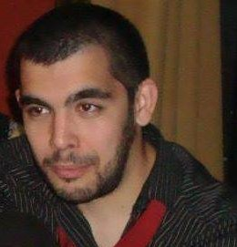

Emiliano Leonel Piñeiro
Desarrolador web full-stack
Acerca de mi
Trabajador dedicado y con principios en quien se puede confiar para visualizar, planificar y llevar a cabo proyectos complejos. Buscando oportunidades de crecimiento para probar nuevas tecnologías y aumentar mis habilidades técnicas en un ambiente en equipo.
Estudios y Habilidades
Estudios
- BACHILLER “ECONOMÍA Y GESTIÓN DE LAS ORGANIZACIONES”
Instituto Fray Francisco de Paula Castañeda - La Plata - INGENIERÍA EN SISTEMAS DE INFORMACIÓN
UTN - La Plata - CURSO DE ANÁLISIS DE DATOS Y GESTION DE DASHBOARD CON TABLEAU
UTN - Buenos Aires - CURSO DE QGIS
Centro Redes - Inglés Centro CUI
Habilidades
- Html, Css, Javascript
- Angular
- Python
Experiencia Laboral
- Facturista de prestaciones médicas
freelance (Marzo 2009 - actualidad) - Community manager y analista digital
Regaleria "Luz de luna" (Noviembre 2017 - Marzo 2018 - Vendedor local de tecnología
"Cellcom" (Enero 2022 - Abril 2022)